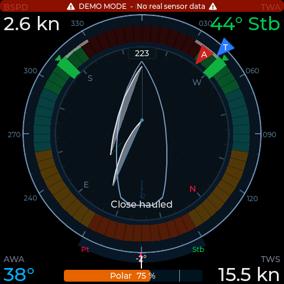

A DIY NMEA 2000 instrument display for sailing yachts, built on the Waveshare ESP32-S3-Touch-LCD-4. Wind, speed, depth, engine, AIS, autopilot, batteries, tanks, weather, anchor watch — 17 screens plus configurable data grids, in English and German.

Hobby project — not NMEA-certified, not sold, not a navigation device. Read the warning in the README before connecting self-built hardware to a boat's backbone. Tender to NauticPi.